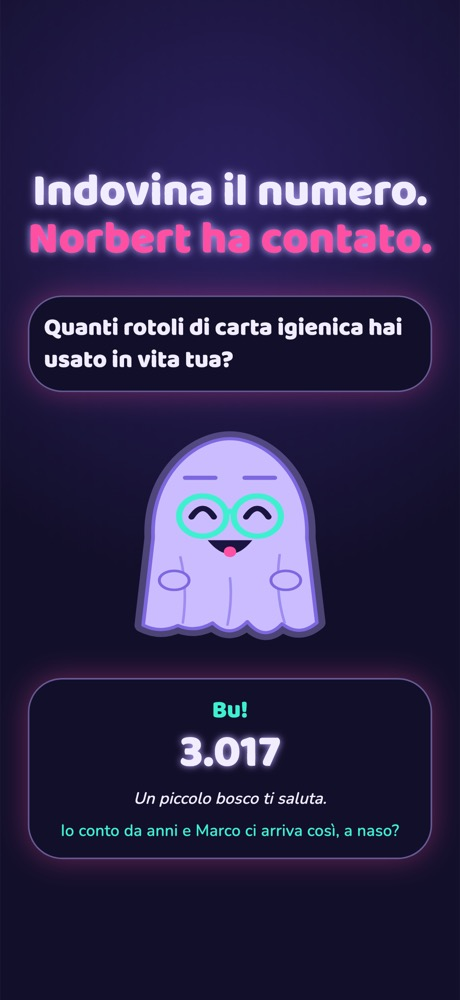
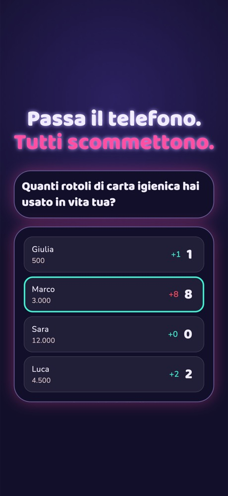
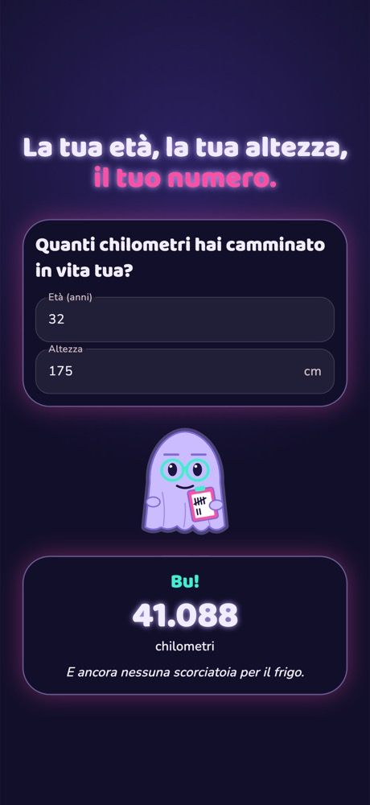
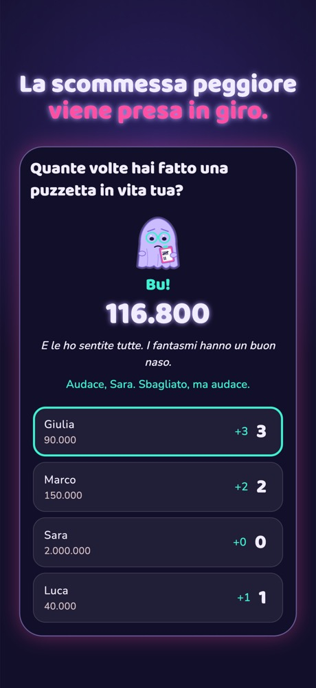
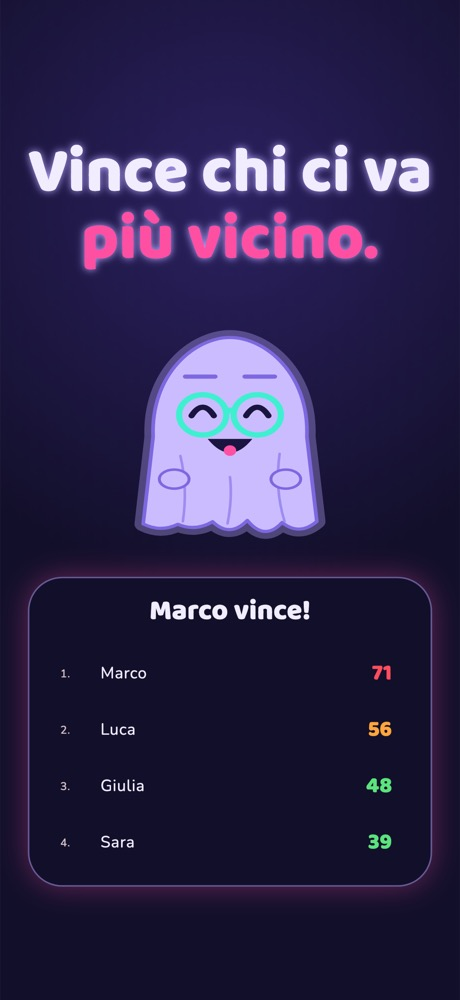
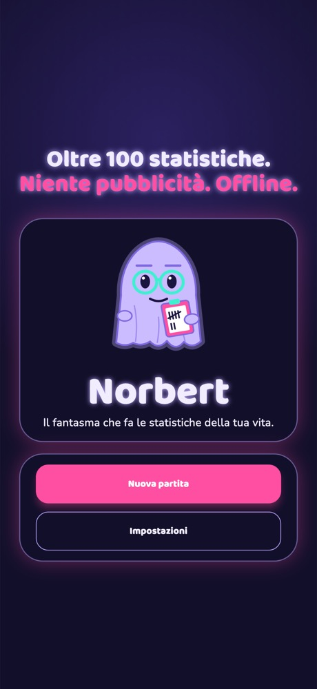

Norbert
Il fantasma che fa le statistiche della tua vita.
Norbert è un fantasma secchione con gli occhiali che ti segue da quando sei nato, blocco in mano. Ha contato tutto: i rotoli di carta igienica, i chilometri percorsi, i litri di sudore.
Passatevi il telefono, date qualche informazione su di voi e scommettete sul numero. Poi Norbert svela la verità e prende in giro chi ci è andato più lontano.
Le statistiche sono disponibili in italiano, inglese, francese, tedesco, spagnolo e portoghese.
Screenshot






COME SI GIOCA
1. Informate Norbert
La statistica chiede uno o due dati, come l'età o il peso, così il risultato parla davvero di te. Troppo personale? Passa a un'altra.
2. Scommettete
Ogni giocatore, a turno, inserisce la sua stima del numero, senza sbirciare quelle degli altri.
3. Buh!
Norbert salta fuori con la risposta, un paragone per rendersene conto e una frecciatina per chi ha sbagliato di più.
I punti
Fai 1 punto per ogni giocatore che è andato più lontano di te. Vai vicinissimo per un bonus:
La partita come piace a voi
Da 2 a 8 giocatori su un solo telefono, 5, 10 o 15 round. Una partita interrotta si può riprendere più tardi.
101 statistiche su di voi
Da tutta la tua vita fino a ciò che il tuo corpo sta facendo adesso: capelli cresciuti, battiti di ciglia, battiti del cuore, pizze mangiate… Numeri credibili, domande sciocche.
Niente pubblicità, niente tracciamento
Norbert è gratuito. Niente account, niente pubblicità, niente acquisti in-app, niente tracciamento. L'app funziona completamente offline: ciò che dite a Norbert resta sul vostro telefono.
Se ti piace quello che faccio e vuoi aiutarmi ad andare avanti, un caffè aiuta molto.
Offrimi un caffèCrediti
- Design e codice
- Jeff · Two Pins Studio
- Realizzato con
- Flutter